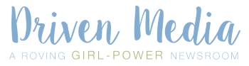

Ha kisvállalkozást vezet, akkor valószínűleg tisztában van azzal, hogy az arculat milyen súllyal játszik szerepet a vállalat kommunikációjában. Anélkül, hogy 5 perces grafikusi gyorstalpalót adnék Önnek szeretnék pár tervezési ismeretet megosztani, ami segíthet a cége számára ideális megjelenés kiválasztásában.
Az alapigazság, hogy előzetesen minél több grafikai tervet lát, annál jobban ráérez a saját arculatára és definiálhatja márkája megjelenését. Mielőtt azonban terveztetni kezd egy szakemberrel, győződjön meg róla, hogy valóban tudja, milyen célközönséghez szól és mit - érzést, hangulatot, gondolatot - szeretne közvetíteni a vásárlói felé. A tervezés a cég személyiségéről szól, és arról szól, hogyan juttatja el ezt a személyiséget a fogyasztókhoz.
Tehát tegyük fel, hogy végre meghatározta a vállalata személyiségét. Itt az ideje, hogy válasszon egy betűtípust és egy kis színt. A tipográfia a tervezés fontos eleme. Nem csak a cég nevét jeleníti meg, hanem a személyiségét is. Sok vállalat márka betűkészletét közvetlenül a nyereséghez köti. Például a White Mountain Footwear azt állítja, hogy 20 százalékkal nőttek az eladások, miután átalakították a betűtípust.
A betűtípusoknak három fő típusa közül választhatunk. Mindegyiknek vannak erősségei és gyengeségei, és mindegyiknek több száz fajtája van. A Serif betűtípusok klasszikusak - gondoljunk az akadémiákra, egyetemekre, a jó öreg Times New Roman-ra és a nyomtatott újságokra. Egy tanulmány kiemelte, hogy a betűtípus hogyan befolyásolja a bizalmat: kutatók megállapították, hogy a Baskerville serif betűtípus hatására az olvasók megbízhatónak találtak egy bemutatott árajánlatot. Ha hagyományos, professzionális hangulatra törekszik, akkor válasszunk serif betűtípust. Vigyázat, bizonyos közönség ezt elavultnak találhatja, különösen egy webes felületen. Példa lehet a Script GAP ruhamárka emblémája
A Sans serif az internet kedvenc betűtípusa - gondoljuk a tech startupokra, a Helvetica-ra és az életmódblogokra. Tiszta és modern. Könnyű olvasni akkor is, ha kicsi. Tehát ha friss, új és mégis olvasható betűtípusra vágyik, akkor a sans serif az ideális választás. Példa a sans serif logóra a Google megjelenése
A Script betűtípusai bonyolultak. Sokféle lehet a személyiségük - lehetnek kreatívak, elegánsak vagy hétköznapiak. Szokatlanok és talán egy kicsit nehezen olvashatók. Szórakoztató és fiatalos jelleget kölcsönöznek a céges arculatnak. Íme a példa egy Script logóra:

A színek önmagukban személyiséggel bírnak . Valójában a fogyasztók 80% -a szerint a szín növeli leginkább a márka ismertségét.A Logo Company nemrég tanulmányozta vállalatok logójának színeit és az általuk képviselt érzéseket. A vörös izgalmas, merész és fiatalos. A narancs barátságos, vidám és magabiztos. A sárga optimizmust, tisztaságot és melegséget hoz. A zöld a békét, az egészséget és a növekedést jelenti. A kék bizalmat, megbízhatóságot és erőt sugall. A lila kreatív, ötletes és bölcs. A fekete-fehér pedig kiegyensúlyozott, semleges és nyugodt. Ha több színt szeretne használni logójában vagy márkájában, akkor tudnia kell, hogy az emberek inkább a hasonló színárnyalatú színkombinációkat részesítenek előnyben (például kéket és lilát). És ha hangsúlyos színt keres, a fő palettával jelentős kontrasztú szín a leghatékonyabb.